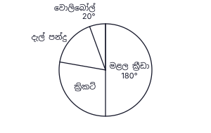
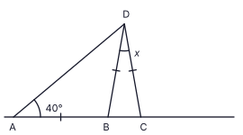
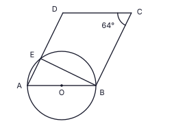
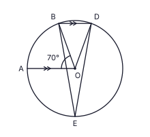
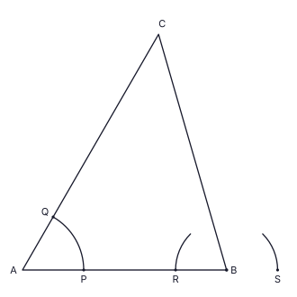

තේ වතුයායක කොටසක සියලුම තේ දළු නෙළීමට සේවකයින් 12 දෙනෙකුට දින 15ක් ගත වේ. සියලුම සේවකයින් එකම වේගයෙන් වැඩ කරයි. එම කාර්යයම දින 10 කින් අවසන් කිරීමට අමතරව සේවකයින් කී දෙනෙකු අවශ්ය වේද?
රූපයේ AB ∥ CD වේ. AÊC = 115° ද EĈD = 45° ද නම්, BÂE හි විශාලත්වය සොයන්න.

සුළු කරන්න: 34x + 56x − 23x
පාදම ත්රිකෝණයක් වූ සෘජු ප්රිස්මයක මුහුණතක් විය නොහැක්කේ පහත සඳහන් චතුරස්ර අතරින් කුමක්ද? එයට අදාළ කොටුවේ ✓ ලකුණ යොදන්න.
(i) සමචතුරස්රයක් (ii) සමචතුරස්රයක් නොවන සෘජුකෝණාස්රයක් (iii) සෘජු කෝණයක් නැති සමාන්තරාස්රයක් ☐ ☐ ☐
පාසලේ ක්රීඩා උළෙල සඳහා සිසුන් තෝරාගත් ක්රීඩා ඉසව් වෘත්ත ප්රස්තාරයෙන් දැක්වේ. වොලිබෝල් තෝරාගත් සිසුන් ගණන 8 කි. මළල ක්රීඩා තෝරාගත් සිසුන් ගණන සොයන්න.

රූපයේ O යනු වෘත්තයේ කේන්ද්රයයි. DOC සරල රේඛාව AB ජ්යාය එහි මධ්ය ලක්ෂ්යය වන C හිදී හමු වේ. AÊB = 140° නම්, CD̂B හි විශාලත්වය සොයන්න.

සාධක සොයන්න: 2x2 − 72
100.7782 = 6 බව දී ඇති විට, lg 6000 හි අගය ලියන්න.
රූපයේ AB යනු තිරස් බිමක සිටුවා ඇති සිරස් කොඩිගහකි. කොඩිය B හි ඇත. මලිත් බිම C ලක්ෂ්යයේ සිට කොඩිය දෙස බලයි. රූපයේ C සිට B හි ආරෝහණ කෝණය a ලෙසත්, B සිට C හි අවරෝහණ කෝණය b ලෙසත් ලකුණු කරන්න. a හා b අතර සම්බන්ධය ලියන්න.

සෘජු වෘත්තාකාර සිලින්ඩරයක උස එහි පාදයේ අරය මෙන් 3 ගුණයකි. එහි වක්ර පෘෂ්ඨය හරියටම ආවරණය කිරීමට අවශ්ය කඩදාසි වර්ගඵලයත්, එහි පාදය හරියටම ආවරණය කිරීමට අවශ්ය කඩදාසි වර්ගඵලයත් අතර අනුපාතය සොයන්න. (සිලින්ඩරයක වක්ර පෘෂ්ඨයේ වර්ගඵලය = 2πrh)
පන්සල් පෙරහරක ක්රීඩාවකදී සුපුන් අපක්ෂපාතී චතුස්තල (මුහුණත් හතරක) දාදු දෙකක් එකවර උඩ දමයි. එක් එක් දාදුවේ මුහුණත් 2, 3, 5 හා 7 ලෙස අංකනය කර ඇත. පහළ මුහුණත්වල අංකවල එකතුව 10 වීමේ සම්භාවිතාව සොයන්න.
රූපයේ ABC සරල රේඛාවකි. AB = BD = DC වේ. BÂD = 40° නම්, x හි අගය සොයන්න.

ξ = {x : x යනු 1 ≤ x ≤ 10 වන පූර්ණ සංඛ්යාවකි}, A = {3 හි ගුණාකාර} හා B = {ඉරට්ටේ සංඛ්යා} යැයි ගනිමු. නිවැරදි ප්රකාශයට අදාළ කොටුවේ ✓ ලකුණ යොදන්න.
(i) A ∩ B = {3, 6} (ii) A ∩ B = {6} (iii) n(A ∪ B) = 8 ☐ ☐ ☐
සුළු කරන්න: 6x2y3 × 4x4y ÷ 8xy2
ගුණෝත්තර ශ්රේඪියක දෙවන පදය හා තුන්වන පදය පිළිවෙළින් −4 හා −12 වේ. එහි පස්වන පදය සොයන්න.
රූපයේ ABCD වෘත්ත චතුරස්රයකි. BD මගින් AD̂C සමච්ඡේදනය කරයි. AB රේඛාව E දක්වා දික් කර ඇත. BÂC = 28° නම්, CB̂E හි විශාලත්වය සොයන්න.

8a2b3, 12a3b හා 20ab2c හි මහා පොදු සාධකය සොයන්න.
සෘජු ප්රිස්මයක ත්රිකෝණාකාර පාදමේ වර්ගඵලය 38.5 cm2 කි. ඝන සෘජු වෘත්තාකාර සිලින්ඩරයක උසත් පරිමාවත් එම ප්රිස්මයේ උසට හා පරිමාවට සමාන වේ. සිලින්ඩරයේ අරය r සොයන්න. (සිලින්ඩරයක පරිමාව = πr2h)
ABC ත්රිකෝණයේ D හා E යනු පිළිවෙළින් AB හා AC හි මධ්ය ලක්ෂ්ය වේ. AD̂E = 90°, AD = 6 cm හා AE = 10 cm වේ. BCED ත්රපීසියමේ පරිමිතිය සොයන්න.

(2, 4) හා (5, 13) ලක්ෂ්ය හරහා යන සරල රේඛාවේ සමීකරණය සොයන්න.
රූපයේ O යනු වෘත්තයේ කේන්ද්රයයි. AB විෂ්කම්භයකි. ABCD සමාන්තරාස්රයකි. AD පාදය වෘත්තය E හිදී හමු වේ. BĈD = 64° නම්, AB̂E හි විශාලත්වය සොයන්න.

හසිනි යම් මුදලක් වාර්ෂික 20% ක වැල් පොලී අනුපාතිකයට අවුරුදු 2ක් සඳහා ආයෝජනය කළාය. ඇය දෙවන වසරේදී උපයාගත් පොලිය රු. 3 600 ක් වූ අතර, අවුරුදු 2 අවසානයේ ඇයට තිබූ මුළු මුදල රු. 21 600 කි. ඇය ආයෝජනය කළ මුදල සොයන්න.
රූපයේ O යනු වෘත්තයේ කේන්ද්රයයි. OA ∥ BD වේ. AÔB = 70° නම්, BÊD හි විශාලත්වය සොයන්න.

5x + 28 > 3 අසමානතාව විසඳා, එය සපුරාලන ඍණ පූර්ණ සංඛ්යා ලියන්න.
ABC ත්රිකෝණයේ AB පාදය B හිදී ස්පර්ශ කරන වෘත්තයක් AC පාදයද ස්පර්ශ කරයි. නිර්මාණයක කොටසක් දැනටමත් දක්වා ඇත. රූලක් හා කවකටුවක් භාවිතයෙන්, ඔබගේ දැනුම යොදා නිර්මාණය සම්පූර්ණ කර, වෘත්තයේ කේන්ද්රය O ලෙස ලකුණු කරන්න. (වෘත්තය ඇඳීම අවශ්ය නැත.)
